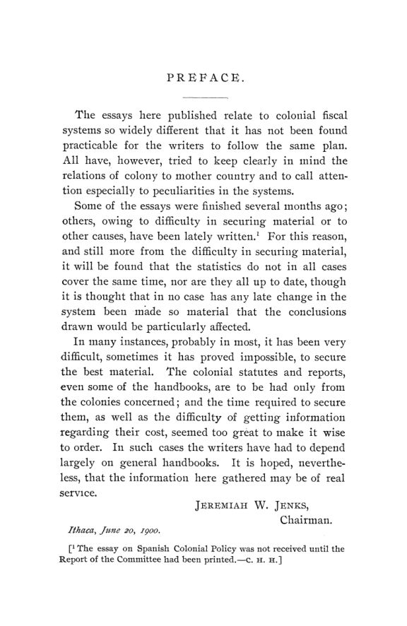

Quem paga o império? As finanças coloniais em dez sistemas fiscais
Leitura: 11 min
Em 1900, com os Estados Unidos diante de novas dependências, economistas americanos abriram os orçamentos de dez impérios: quem pagava o exército, a tarifa, a dívida e o déficit das colônias.


Em 1898, as colônias custaram à França mais de 108 milhões de francos. Edwin R. A. Seligman chega ao número somando o que Paris pagava em soberania (exército, marinha, juízes, cultos, prisões), subvenções aos orçamentos locais e subsídios a linhas de navegação, e descontando o pouco que voltava: os “contingentes” cobrados das colônias, o aluguel que a Inglaterra pagava desde 1818 pela renúncia francesa ao monopólio do sal na Índia, descontos para pensões e vendas de bens. E avisa que a conta não inclui o aumento da administração metropolitana causado pelas colônias, impraticável de separar.
A conta francesa abre o volume que a American Economic Association publicou em agosto de 1900. A Comissão das Colônias, criada na décima primeira reunião anual e presidida por Jeremiah W. Jenks, com Charles S. Hamlin, Seligman e Albert Shaw, queria reunir informação sobre os métodos fiscais de colônias modernas típicas e sugerir princípios aplicáveis às novas dependências dos Estados Unidos. O resultado são dez ensaios: França, Alemanha, Holanda, Itália, Espanha, Dinamarca, Antilhas Britânicas, Egito, África do Sul britânica e as possessões inglesas do Extremo Oriente. No prefácio, Jenks adverte que as estatísticas não cobrem os mesmos anos nem estão todas atualizadas: leis e relatórios coloniais, muitas vezes, só se obtinham nas próprias colônias.
O que a comissão recomendava aos Estados Unidos?
O relatório lista doze sugestões, apresentadas como provisórias. A primeira dá o tom: as finanças de cada colônia devem ser geridas
“exclusivamente em benefício da colônia e de seu desenvolvimento” (“exclusively for the sake of the colony and for its development”)
As demais descem ao detalhe. Não há sistema uniforme possível; cada colônia deve, tanto quanto possível, sustentar-se, embora a metrópole possa apoiar seu crédito ou adiantar recursos a devolver. Onde o comércio exterior é o principal, tarifas de importação muito baixas ou nulas. Em colônias pouco desenvolvidas, a base deve ser a tributação interna, com impostos sobre bebidas, ópio e arroz e direitos compensatórios sobre importados similares; a comissão admite até impostos baixos de exportação, supondo que não violem a Constituição americana. Rejeita o octroi para fins locais e prefere receita local sobre imóveis e licenças. Quer nativos como funcionários, com a palavra final do governo americano, um serviço civil de capacidade e honestidade indiscutíveis e, onde faltar mão de obra, o exame da admissão de trabalhadores estrangeiros: excluir chineses dos Estados Unidos, escreve, não implica excluí-los das Filipinas.
Quem pagava a conta?
A resposta muda de império para império. Na França, mais de quatro quintos dos contingentes de 1898 vinham da Cochinchina, que ainda custeava com recursos próprios despesas que nas outras colônias eram cobertas por subvenções de Paris. Desde 1892, as colônias francesas não fixavam mais suas tarifas, agora definidas pela metrópole. Seligman descreve um governo que oscila entre autonomia e assimilação e registra que os administradores coloniais mais recentes pediam relações mais simples e mais independência para as colônias.
A Alemanha seguia o caminho oposto. Isidore Loeb não encontra nenhuma colônia contribuindo para as despesas da metrópole e mostra subvenções imperiais crescentes: o orçamento do Império para 1899 reservava cerca de 25 milhões de marcos às colônias, incluída Kiauchou. Uma lei de 30 de março de 1892 pôs orçamento e endividamento coloniais sob controle do legislativo imperial e determinou que as obrigações de cada colônia vinculassem apenas o patrimônio dela. Os habitantes não tinham voz na fixação dos tributos.
A Holanda conheceu as duas situações. Entre 1830 e cerca de 1860, o sistema de cultura obrigava os camponeses de Java a dedicar terra e trabalho a produtos que o governo comprava a preço fixo e vendia na Europa; o excedente líquido ia para o tesouro holandês. Clive Day cita a estimativa de Van der Berg: 725 milhões de florins entre 1831 e 1871. A guerra de Atjeh, iniciada em 1873, transformou o excedente em déficit. Em 1874, o orçamento holandês fechou sem subsídio indiano pela primeira vez desde 1814, e em 1898 uma lei autorizou um empréstimo de 3% em nome das Índias.
Para os impérios pequenos, a conta tinha um lado só. Albert G. Keller registra que a Eritreia cobria pequena parte do próprio custo e que Attilio Brunialti estimava em cerca de 500 milhões de liras o que as colônias haviam custado à Itália até 1897. O peso recaía sobre um país que gastava cerca de um terço do dinheiro com juros da dívida e outro terço com exército e marinha. Daí a conclusão de Keller:
“uma colônia assim é algo como um luxo” (“such a colony is something of a luxury”)
Charles W. Tooke conta história parecida nas Antilhas Dinamarquesas. A lei de 1863 previa que as ilhas se tornassem financeiramente independentes e até contribuíssem para o tesouro real. Em 31 de março de 1898, St. Thomas e St. John deviam ao tesouro dinamarquês US$ 1.045.418. Quando Copenhague propôs, em 1895–1896, assumir boa parte das despesas em troca das receitas indiretas, o conselho colonial recusou: via na troca uma perda de autogoverno.
No outro extremo está o caso espanhol, descrito por Frank W. Blackmar. Nos orçamentos de Cuba, as despesas de soberania, entre elas dívida, guerra e marinha, absorviam quase tudo, e o governo local ficava com o resto. Blackmar sustenta que a dívida cubana, superior a US$ 170 milhões antes da insurreição de 1895, nascera de guerras e déficits e pertencia à Espanha, não a Cuba.
Tarifa ou imposto interno?
O volume trata a escolha do tributo como questão de estrutura econômica. Nos Estreitos (Straits Settlements), entreposto em que mais de cinquenta linhas de vapores escalavam Singapura, não se cobravam direitos de importação nem de exportação; a receita vinha de licenças, a mais rendosa a do ópio. Nos Estados Malaios Federados, a principal fonte era um imposto de exportação sobre o estanho, com escala móvel conforme o preço, que rendeu 3.210.699 dólares mexicanos em 1898. Em Fiji e no Ceilão, onde a prosperidade dependia dos recursos internos, Jeremiah W. Jenks encontra os direitos de importação no centro da receita.
Nas Antilhas Britânicas, Charles H. Hull mostra o limite desse caminho. Com o açúcar em crise, a exportação já não suportava imposto, e todas as colônias passaram a tributar o que o açúcar comprava. Na Jamaica, os direitos de 1897–1898 equivaliam a cerca de 17% do valor de todas as importações, incluídas as isentas. Em São Vicente, os aumentos de alíquota de 1895 e 1896 terminaram em queda da arrecadação aduaneira: o limite de receita fora atingido.
O Egito é o caso em que o credor dita o orçamento. A dívida, de pouco mais de 3 milhões em 1863, chegara a 89 milhões no fim de 1876, segundo Sir Alfred Milner, citado por E. W. Kemmerer. Vieram a Caisse de la Dette, em 1876, e a Lei de Liquidação de 1880, que dividiu as receitas em duas partes quase iguais, uma para a dívida e outra para a administração, esta sujeita a um limite de despesa. A Convenção de Londres, de 1885, flexibilizou a partilha dos excedentes, mas manteve pouco espaço para gasto extraordinário.
Quanto custava defender a colônia?
A defesa é o item que mais separa os sistemas. As Índias Holandesas pagavam todo o seu exército e marinha. Os Estreitos entregavam 17,5% da receita como contribuição fixa pela guarnição imperial, por uma lei de 1896. Jenks resume a regra britânica no Oriente: a metrópole exige autossuficiência e contribuição militar, mas paga as fortificações que servem ao império inteiro e não cobra outros favores. Na Colônia do Cabo, Roland P. Falkner mostra a defesa dividida entre Londres e a colônia, que mantinha forças próprias.
Hull observa, por fim, que o socorro tem preço. Em 1898, o Parlamento votou £ 90.000 para cobrir déficits antilhanos e passou a financiar estradas, estações agrícolas e subsídios a vapores. A contrapartida natural, escreve, seria o controle imperial sobre tributos e gastos de colônias habituadas a decidir sozinhas. A frase final do ensaio resume a mudança:
“a política de independência fiscal nas Antilhas fracassou” (“the policy of fiscal independence in the West Indies has broken down”)
Na minha leitura
Na minha leitura, o volume é um exercício de finanças públicas comparadas organizado em torno de uma pergunta: quem paga. As respostas cabem em três modelos. Há a colônia que remete recursos à metrópole, como Java no sistema de cultura, a Cochinchina dos contingentes ou a Cuba das despesas de soberania. Há a colônia sustentada pela metrópole, como as alemãs, a Eritreia, as Antilhas Dinamarquesas e, depois de 1898, as britânicas do Caribe. E há a regra britânica no Oriente: autossuficiência, com uma contribuição militar explícita. Os casos mostram que autonomia fiscal e dependência de transferências andam em sentidos opostos. Quem recebe subvenção perde margem para decidir, e o conselho dinamarquês que recusou o socorro sabia disso.
O segundo ponto é de método tributário. A escolha entre tarifa e imposto interno não aparece como doutrina, e sim como estrutura: o entreposto não tributa o comércio que o sustenta; a economia agrícola importadora acaba apoiada na alfândega, até o ponto em que alíquota maior rende menos; o produto com vantagem natural, como o estanho malaio, suporta imposto de exportação. O arranjo egípcio antecipa o que hoje se chamaria regra fiscal, com prioridade ao serviço da dívida, teto de despesa e reservas vinculadas. O custo aparece no próprio ensaio: pouco espaço para a irrigação, o gasto que, segundo Kemmerer, mais rendera ao país.
Glossário
- contingente
- contribuição cobrada das colônias francesas, em tese como contrapartida das despesas de soberania pagas pela metrópole.
- despesas de soberania
- gastos com exército, marinha, justiça e administração superior, pagos pela metrópole ou cobrados da colônia.
- subvenção
- transferência da metrópole para cobrir déficits ou obras dos orçamentos coloniais.
- despesas obrigatórias
- itens que a lei francesa de 1866 obrigava cada colônia a incluir no próprio orçamento, como dívida e contingente.
- sistema de cultura
- regime holandês em Java (c. 1830–1860) que obrigava camponeses a cultivar produtos vendidos ao governo a preço fixo.
- excedente líquido (batig slot)
- saldo das finanças coloniais remetido ao tesouro da metrópole.
- octroi
- imposto municipal sobre mercadorias que entram numa cidade; nas colônias francesas, o octroi de mer, cobrado sobre o que chegava por mar.
- excise
- imposto sobre a produção ou o consumo de bens específicos, como bebidas, tabaco e ópio.
- direito compensatório
- tarifa sobre o importado igual ao imposto interno cobrado do similar local.
- arrendamento de receitas
- concessão a particulares, mediante pagamento, do direito de cobrar um tributo ou explorar um monopólio.
- imposto sobre cabanas (hut tax)
- tributo fixo por habitação cobrado de populações nativas na África do Sul.
- corveia
- trabalho compulsório não pago exigido para obras públicas, como canais e estradas.
- Caisse de la Dette
- comissão internacional criada em 1876 para receber receitas egípcias vinculadas ao serviço da dívida.
- limite de despesa
- teto fixado para os gastos administrativos do Egito, depois do serviço da dívida.
- contribuição militar
- parcela da receita colonial paga à metrópole pela manutenção da guarnição imperial.
- união aduaneira
- acordo de tarifa externa comum e livre comércio interno, como o da África do Sul em 1888.
Artigos desta edição
- Report of the Committee on Colonies — Comissão das Colônias da American Economic Association: Jeremiah W. Jenks (presidente), Charles S. Hamlin, Edwin R. A. Seligman e Albert Shaw (pp. 17–20). A comissão, criada na décima primeira reunião anual, perdeu E. H. Strobel, que se retirou por causa de uma viagem à Europa, e o relatório sai com quatro assinaturas. Com base nos estudos encomendados, propõe doze princípios para as dependências americanas: finanças geridas para a colônia, não para a metrópole; nenhum sistema uniforme; autossuficiência, com possível apoio ao crédito; obras públicas estatais em colônias pouco desenvolvidas; tarifas mínimas onde o comércio exterior domina; receita interna com impostos sobre bebidas, ópio e arroz; rejeição do octroi; nativos como funcionários, com decisão final do governo americano; manutenção transitória do arrendamento de receitas; serviço civil rigoroso; e exame da admissão de trabalhadores estrangeiros. JSTOR
- The French Colonial Fiscal System — Edwin R. A. Seligman (pp. 21–39). Seligman descreve um império francês ampliado em mais de dois terços em quinze ou vinte anos e uma política fiscal oscilante: autonomia desde 1825, assimilação a partir de 1841, autonomia moderada desde 1854 e perda do direito de fixar tarifas em 1892. As despesas aparecem em dois orçamentos: o da metrópole, com soberania, subvenções e subsídios marítimos, e os coloniais, votados pelos conselhos gerais com as despesas obrigatórias da lei de 1866. Em 1898, as colônias custaram à França mais de 108 milhões de francos líquidos. A receita local vinha sobretudo de impostos indiretos, selos, bebidas e tarifas, além de capitações e licenças; na Argélia, os nativos pagavam quatro impostos árabes. JSTOR
- The German Colonial Fiscal System — Isidore Loeb (pp. 40–72). Loeb trata de colônias recentes, adquiridas a partir de 1884 e governadas primeiro por companhias com carta e depois diretamente pelo Império. Pela lei de 30 de março de 1892, orçamento e dívida de cada colônia passaram ao legislativo imperial, e as obrigações coloniais só vinculam o patrimônio da própria colônia. A receita local vem de alfândegas, licenças comerciais e impostos novos, como o de casas na África Oriental, cobrado desde 1898 também em produtos e trabalho; o resto, crescente, são subvenções imperiais. Loeb não encontra intenção de usar as colônias para custear a metrópole nem privilégios fiscais para alemães. Camarões chegou a devolver parcelas de um adiantamento, suspensas depois de 1897–1898. JSTOR
- The Dutch Colonial Fiscal System — Clive Day (pp. 73–104). Day separa as Índias Orientais, que durante boa parte do século remeteram excedentes à Holanda, de Suriname e Curaçao, sustentados pela metrópole. Descreve três fases: experimentação até 1830, sistema de cultura e “excedente líquido” até cerca de 1860 e, depois, abolição gradual das culturas forçadas e reforço dos impostos. A guerra de Atjeh, desde 1873, inverteu o saldo e levou a um empréstimo de 3% em 1898. O ensaio detalha a renda da terra em Java, a capitação usada para substituir trabalho compulsório, o café ainda cultivado sob coerção, os monopólios do ópio e do sal e um orçamento votado pelos Estados Gerais. As Índias pagam todo o seu exército e marinha. JSTOR
- Italy's Experience with Colonies — Albert G. Keller (pp. 105–111). Keller adverte que a expansão italiana tinha quinze anos, terminara em desastre em 1896 e que lhe faltaram dados para tratar de tributos em detalhe. Da compra de Assab, por dois terços de um milhão de liras, à ocupação de Massaua, em 1885, a Eritreia não atraiu emigrantes nem capitais. Desde 1890 havia orçamento colonial próprio, mas a receita local cobria pequena parte do gasto; somadas tropas e operações militares, o peso no tesouro era estimado em vinte milhões de liras por ano. Keller conclui que a colonização italiana foi artificial e que o exemplo deveria levar países pequenos e pobres a evitar expansão excessiva. JSTOR
- Spanish Colonial Policy — Frank W. Blackmar (pp. 112–143). Chegou depois de impresso o relatório da comissão. Blackmar percorre quatro séculos de política colonial espanhola: o Conselho das Índias, a Casa de Contratação de Sevilha, de 1503, o comércio forçado por poucos portos, proibições a cultivos que concorressem com a Espanha e a ocupação dos cargos por peninsulares. Descreve a carga tributária dos séculos XVII e XVIII, com alcabala, almojarifazgo, quinto das minas e tributo indígena, e os orçamentos de Cuba e Porto Rico às vésperas de 1898, dominados pelas despesas de soberania. Para o autor, o problema estava menos no volume arrecadado do que no destino da receita, e a dívida cubana deveria caber à Espanha. JSTOR
- The Danish Colonial Fiscal System in the West Indies — Charles W. Tooke (pp. 144–167). Tooke apresenta St. Thomas, St. John e St. Croix como exemplo de política colonial liberal mantida apesar da perda financeira. A lei de 27 de novembro de 1863 deu a cada uma das duas comunas tesouro próprio e conselho colonial, em parte eleito, com poder sobre orçamento e tributos. A receita é sobretudo indireta: alfândega baixa em St. Thomas, porto de distribuição; tarifa mais pesada em St. Croix, agrícola; e direitos portuários. A contribuição prevista ao tesouro real nunca veio. Os déficits, puxados pelo gasto militar posterior à insurreição de 1878 e pelo declínio do açúcar, viraram dívida com Copenhague, e a reforma de 1895–1896 foi recusada. JSTOR
- Finances in the British West Indies — Charles H. Hull (pp. 168–188). Hull trata as Antilhas Britânicas e a Guiana como o problema mais sério das finanças coloniais do Império, por causa da queda do açúcar. A Comissão Real de 1897 propôs diversificação agrícola, pequenos proprietários e limites ao endividamento; desde 1898, o Parlamento passou a dar subvenções, o que, para Hull, implica controle imperial sobre colônias com assembleias próprias, como mostrou o impasse de 1899 na Jamaica. A Jamaica serve de modelo: alfândega como base, imposto sobre o rum, selos, sete tributos sobre imóveis e licenças, depois de anos de gasto em estradas e garantias a uma ferrovia deficitária. O ensaio fecha com a Lei de Empréstimos Coloniais de 1899. JSTOR
- The Fiscal System of Egypt — E. W. Kemmerer (pp. 189–216). Kemmerer parte de um país cuja riqueza depende do Nilo e de um governo cuja história recente é a da dívida. Narra o endividamento sob Ismail, a criação da Caisse de la Dette em 1876, o controle dual anglo-francês, a Lei de Liquidação de 1880 e a Convenção de Londres de 1885, que autorizou um empréstimo de £ 9 milhões garantido pelas potências e redistribuiu os excedentes. Mostra o imposto territorial, perto de metade da receita, a tarifa uniforme de 8% na importação e 1% na exportação e o teto de 45% para o custeio das ferrovias. Defende mais espaço para gasto extraordinário, sobretudo em irrigação, e registra queda da carga tributária por habitante entre 1881 e 1897. JSTOR
- Finances of British Possessions in South Africa — Roland P. Falkner (pp. 217–262). Falkner percorre os regimes da África do Sul britânica: as colônias autônomas do Cabo e de Natal, a Rodésia governada pela British South Africa Company e os protetorados de Bechuanalândia e Basutolândia. No Cabo, a receita não recebe contribuição direta do Tesouro imperial; vem da tributação, com a alfândega da união aduaneira de 1888 à frente, do patrimônio colonial, que inclui o imposto sobre cabanas, e sobretudo das ferrovias estatais. A dívida de £ 28,4 milhões em 1898 foi em grande parte para obras “reprodutivas”. Na Rodésia, a companhia contabiliza o déficit de governo como futura dívida pública dos habitantes; nos protetorados, o tesouro imperial cobre a diferença. JSTOR
- English Colonial Fiscal System in the Far East — Jeremiah W. Jenks (pp. 263–303). Jenks compara as possessões britânicas no Oriente: Estreitos, Estados Malaios Federados, Labuan, Bornéu do Norte, Sarawak, Hong Kong, Fiji, Nova Guiné Britânica, Maurício e Ceilão. A tese é que a situação econômica define o tributo: entrepostos como Singapura e Hong Kong dispensam tarifas e vivem de licenças, com o ópio à frente; os Estados Malaios taxam a exportação de estanho; Fiji cobra tributo nativo em produtos e direitos de importação; o Ceilão combina alfândega, monopólio do sal e ferrovias lucrativas. Nas conclusões, a Grã-Bretanha torna as dependências autossuficientes, cobra contribuição militar, paga fortificações de interesse imperial e não discrimina tarifas contra rivais, com a exceção canadense. JSTOR
Fontes
- Preface (pp. 3). JSTOR · Internet Archive (PDF)
- Report of the Committee on Colonies (pp. 17–20). JSTOR · Internet Archive (PDF)
- The French Colonial Fiscal System (pp. 21–39). JSTOR · Internet Archive (PDF)
- The German Colonial Fiscal System (pp. 40–72). JSTOR · Internet Archive (PDF)
- The Dutch Colonial Fiscal System (pp. 73–104). JSTOR · Internet Archive (PDF)
- Italy's Experience with Colonies (pp. 105–111). JSTOR · Internet Archive (PDF)
- Spanish Colonial Policy (pp. 112–143). JSTOR · Internet Archive (PDF)
- The Danish Colonial Fiscal System in the West Indies (pp. 144–167). JSTOR · Internet Archive (PDF)
- Finances in the British West Indies (pp. 168–188). JSTOR · Internet Archive (PDF)
- The Fiscal System of Egypt (pp. 189–216). JSTOR · Internet Archive (PDF)
- Finances of British Possessions in South Africa (pp. 217–262). JSTOR · Internet Archive (PDF)
- English Colonial Fiscal System in the Far East (pp. 263–303). JSTOR · Internet Archive (PDF)
- Sumário da edição no JSTOR: Publications of the American Economic Association, 3ª série, vol. 1, nº 3.
Documento em domínio público (EUA, publicado antes de 1931), via JSTOR Early Journal Content e Internet Archive. Resumo e comentário do autor deste site, sem afiliação com a American Economic Association. Encontrou um erro? Escreva: a correção é publicada no próprio texto, com data.
← Nº 54 · Page, 1900: a peste que trocou o trabalho servil por renda Nº 56 · Davis, 1900: o papel que Massachusetts imprimiu para pagar a guerra →